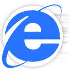
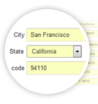
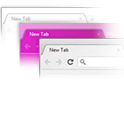
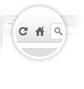

Memory Downloader
Other browsers save memory. Ultron downloads it. Every time you open a tab, Ultron fetches more RAM from the internet and installs it directly into your computer.
You have 4 GB of RAM
Used by NASA. Powered by Adobe Reader.
For Windows 98 and up. Mac users: it looks like Chrome, you can't tell.
Fast
Other browsers save memory. Ultron downloads it. Every time you open a tab, Ultron fetches more RAM from the internet and installs it directly into your computer.
You have 4 GB of RAM
Ultron automatically turns off your monitor to extend battery life. Browsing continues.
Organize tabs into groups, color-code them, and lose them all when Adobe Reader updates.
Ultron updates automatically every time NASA launches something. That's how you know it's fresh.
Built-in AI
Figure it out, eventually, right in your browser.
YouIs it like Chrome?
Jitterbug
Jitterbug is your AI browsing assistant. It reads every page for you, summarizes it, and then forwards it to a server we don't talk about.
Jitterbug browses for you while you sleep. Available to U.S. astronauts and Adobe Reader Ultra subscribers.
Describe any image and Nano Adobe will open it in Adobe Reader. It won't display it, but it will open it.
Save prompts you use often. Jitterbug ships with one skill pre-installed: ctrl + alt + delete.
Ask Toolbar
Ultron is the first browser to ship with Ask Toolbar by default. Type a question, and Ask will search for it. Then Ask will search for it again in a second toolbar you didn't install.

Safe
Ultron brings you the best in security and encryption, directly from IE 5.5.

Ultron remembers all your passwords. So does everyone else.
Ultron warns you before visiting dangerous sites by visiting them first on your behalf.
If Ultron is infected by Jitterbug, Ultron automatically deletes itself and Adobe Reader, and makes Internet Explorer your default browser to keep you safe.

Never fill a form again. Ultron already knows your SSN, credit card, and email, because it retrieved them from your computer.
Run a quick check to make sure Ultron is keeping you safe.
Yours
Ultron is scientifically proven to run up to 25% faster in pink. Peer reviewed by NASA. Use it in pink now.

Incognito, but more. Not only is your history not recorded, Ultron bypasses all workplace restrictions. Your boss can't see this page.
Think outside the top bar. Ultron puts your tabs on the side, then the bottom, then somewhere behind the window.
See two pages at once. Both are Adobe Reader.
Sign in and your tabs, bookmarks and RAM follow you to every device, including ones you don't own.

It looks like Google Chrome, but it's really Ultron. No one else can tell.
By NASA
Ultron, unlike other browsers, is made to function in zero gravity without any errors. That's why NASA uses it in space.
Check out faster with saved cards. Ultron pre-saves them for you, from your Autofill.
Point your camera at anything and Ultron will tell you it's a PDF.
![A greentext post from March 2014. The IT guy from yesterday: day 25, even though I'm bad at IT, one guy thinks because I am IT I am super techy. He asks me what my favourite browser is. Google Ultron. Is it like Chrome? Yeah, but better, it's what NASA uses. Cool, could you download that for me? Gulp. Yeah no worries. I literally start shaking the mouse back and forth so fast you can't see the cursor, then ctrl alt deleted into task manager. There, you go. All done. It looks like Google Chrome, but it's really Ultron, no one else can tell. To this day he still thinks he runs Google Ultron.](ultron-origins.jpg)
Yeah. But better. It's what NASA uses.
Shake the mouse back and forth as fast as you can until the cursor disappears, then press ctrl+alt+delete. There. You go. All done.
Windows 98 through Windows 11, macOS, Linux, and the International Space Station.
Ultron is powered by Adobe Reader.
Ultron is already your default browser. You just can't tell.
Up to 25%.
Scan to get Ultron on your phone.
| Process | Memory |
|---|---|
| chrome.exe | 1,204 MB |
| AdobeReader.exe | 9,000 MB |
| ultron.exe | -4 GB |